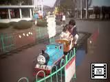
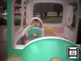
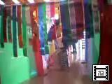
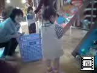
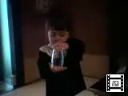
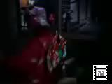
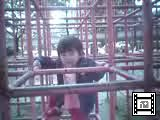
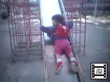
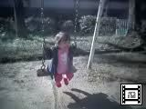
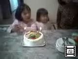

由起子のビデオ(No61-70) |
 |
2000年11月25日撮影 (201KB) 由起子お気に入りの「機関車トーマス」。ママと一周、パパとも 一周乗りました。何度も乗りたかったみたい。 「トーマチュ！トーマチュ！」と大興奮。 |
 |
2000年11月25日撮影 (207KB) ドリームランドでは、よくこの車に乗りましたね。 お金を入れなくても、「ブッブー」と楽しそうに遊んでいます。 ここでも「ママァ、こっちにのりー」って後ろの座席を指差します！ |
 |
2000年11月18日撮影 (111KB) こちらも先生手作りの「トンネル」。 「ママァ、ママもしてみぃ」と、大きな声で叫んでいます。 |
 |
2000年11月18日撮影 (83KB) 保育所の「作品展とふれあい広場」でのヒトコマ。先生手作りの 「ピンボール」で遊んでいます。ホールの中は、あちこちに 趣向のこらした手作りの遊びものがイッパイ！ |
 |
2000年11月15日撮影 (213KB) 七・五・三のお参りや祈祷が終わって、昼食会場での様子。 由起子はちゃんと自分が主役だっていうことが分かっているらしく 嬉しくてしょうがないらしい。 |
 |
2000年11月15日撮影 (93KB) パパんちの実家の氏神さんへ七・五・三のお参り。 とっても趣のあるところでの祈祷風景。ちょうど２年前、 お宮参りにも、ここへ来たのよ。 |
 |
2000年11月4日撮影 (267KB) ジャングルジムに入っていくのは初めてです。 頭を打たないように、ちょっと腰をかがめて、あっちに行ったり こっちに来たり・・・。「パパァ、見てぇー！！」 |
 |
2000年11月4日撮影 (45KB) ちょっと生意気に、すべり台を後ろ向きで降りてきます。 飽きずに何度も何度も滑ります。 |
 |
2000年11月4日撮影 (121KB) 大好きなブランコ！背中を押してあげると、ブーラン・ブーラン 一人で揺れます。「ママァ、見てぇー」って大はしゃぎ。 |
 |
2000年10月8日撮影 (265KB) ２歳のお誕生会をしました。保育所で覚えた「ハッピバスディー・ トゥー・ユー」やっと由起ちゃんが主役で歌えましたね。 これからも元気に・健やかに育ってね！ |